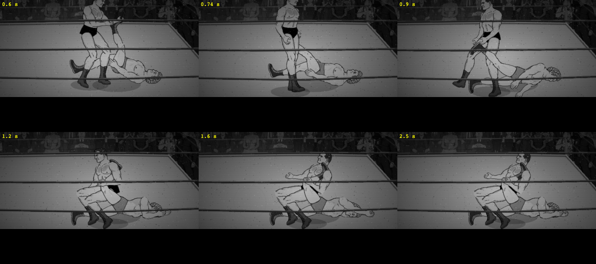
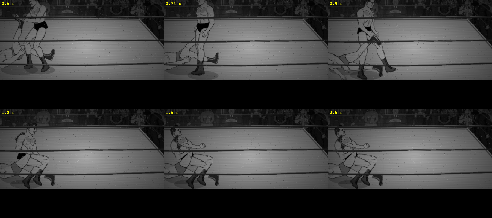
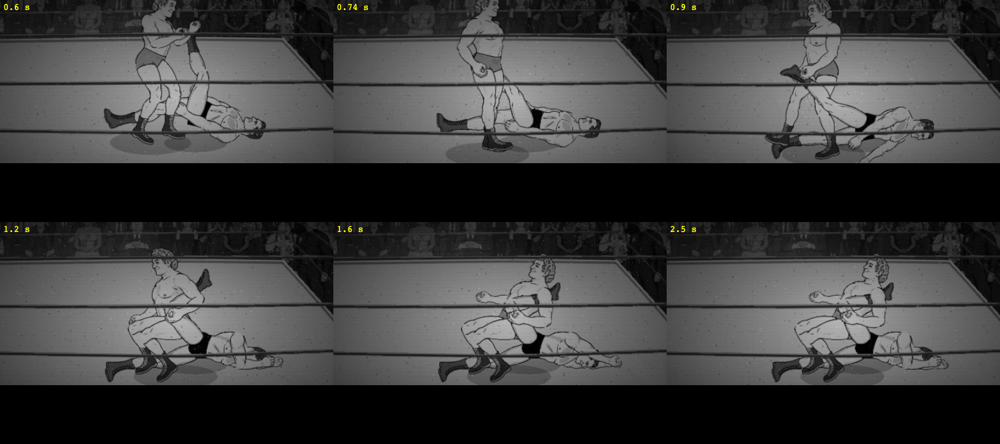
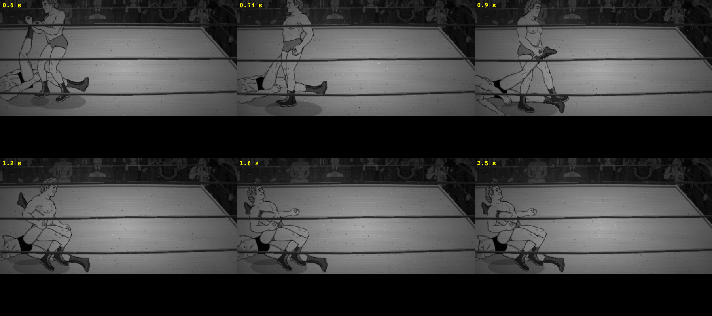

Normal speed, looping. Numbers below each case come from tools/move-preview/crab_measure.mjs + crab_report.mjs; misses first on the plan line.

lou-george-right {"standPelvis":123.45,"holdPelvisMin":73.32,"holdPelvisMax":73.32,"holdFrac":"0.59..0.59","attMinusVictimHipX":[-17.98,-17.98],"maxPartStepClip":39.2,"flips":[[0.783,39.2,-1],[0.883,34.3,-1]],"bootTravelPerPull":[22.3,22.3,22.3],"torsoLeanDeg1_6to3_8":[31.3,8.3,31.3,8.3,31.3,8.3],"overlapLegsPx":[411,572],"trappedPx":[2182,2199],"bootVisiblePx":[340,625],"bootPx":[765,772],"pinnedJoints":[]}
lou-george-left {"standPelvis":123.45,"holdPelvisMin":73.32,"holdPelvisMax":73.32,"holdFrac":"0.59..0.59","attMinusVictimHipX":[17.98,17.98],"maxPartStepClip":39.2,"flips":[[0.783,39.2,1],[0.883,34.3,1]],"bootTravelPerPull":[22.3,22.3,22.3],"torsoLeanDeg1_6to3_8":[-31.3,-8.3,-31.3,-8.3,-31.3,-8.3],"overlapLegsPx":[411,572],"trappedPx":[2182,2199],"bootVisiblePx":[347,633],"bootPx":[775,784],"pinnedJoints":[]}
george-lou-right {"standPelvis":107.86,"holdPelvisMin":64.8,"holdPelvisMax":64.8,"holdFrac":"0.6..0.6","attMinusVictimHipX":[-26.97,-26.97],"maxPartStepClip":38.25,"flips":[[0.783,38.2,-1],[0.883,36.9,-1]],"bootTravelPerPull":[15.8,15.8,15.8],"torsoLeanDeg1_6to3_8":[33.2,10.3,33.2,10.3,33.2,10.3],"overlapLegsPx":[238,408],"trappedPx":[2246,2266],"bootVisiblePx":[507,603],"bootPx":[859,932],"pinnedJoints":["att rElbow"]}
george-lou-left {"standPelvis":107.86,"holdPelvisMin":64.8,"holdPelvisMax":64.8,"holdFrac":"0.6..0.6","attMinusVictimHipX":[26.97,26.97],"maxPartStepClip":38.25,"flips":[[0.783,38.2,1],[0.883,36.9,1]],"bootTravelPerPull":[15.8,15.8,15.8],"torsoLeanDeg1_6to3_8":[-33.2,-10.3,-33.2,-10.3,-33.2,-10.3],"overlapLegsPx":[238,408],"trappedPx":[2246,2266],"bootVisiblePx":[501,604],"bootPx":[863,945],"pinnedJoints":["att rElbow"]}